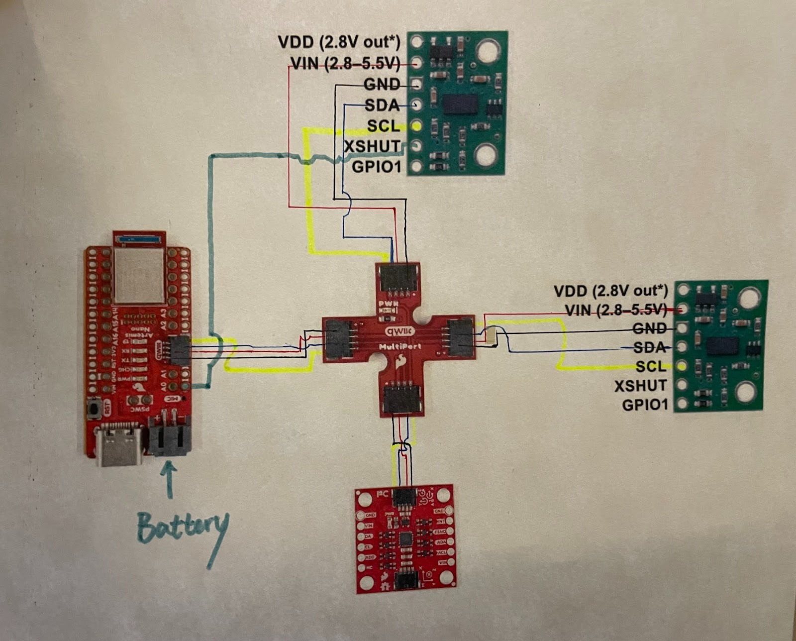
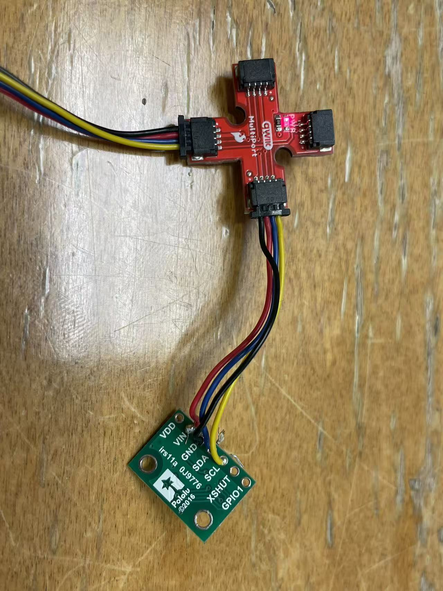
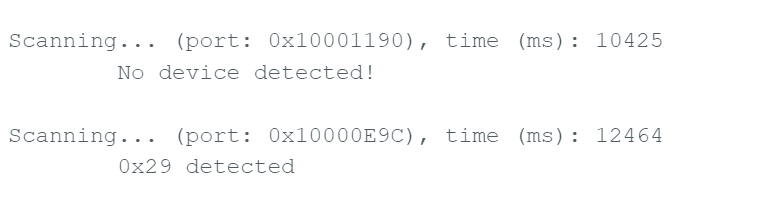
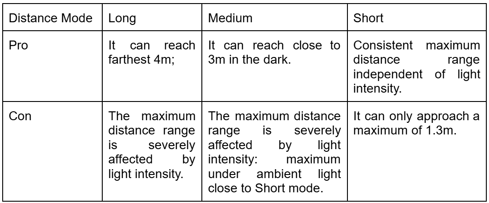
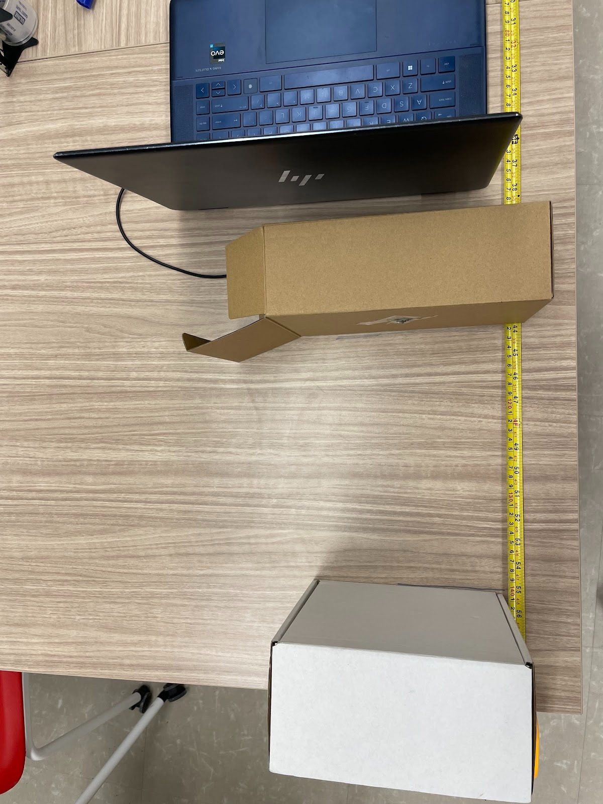
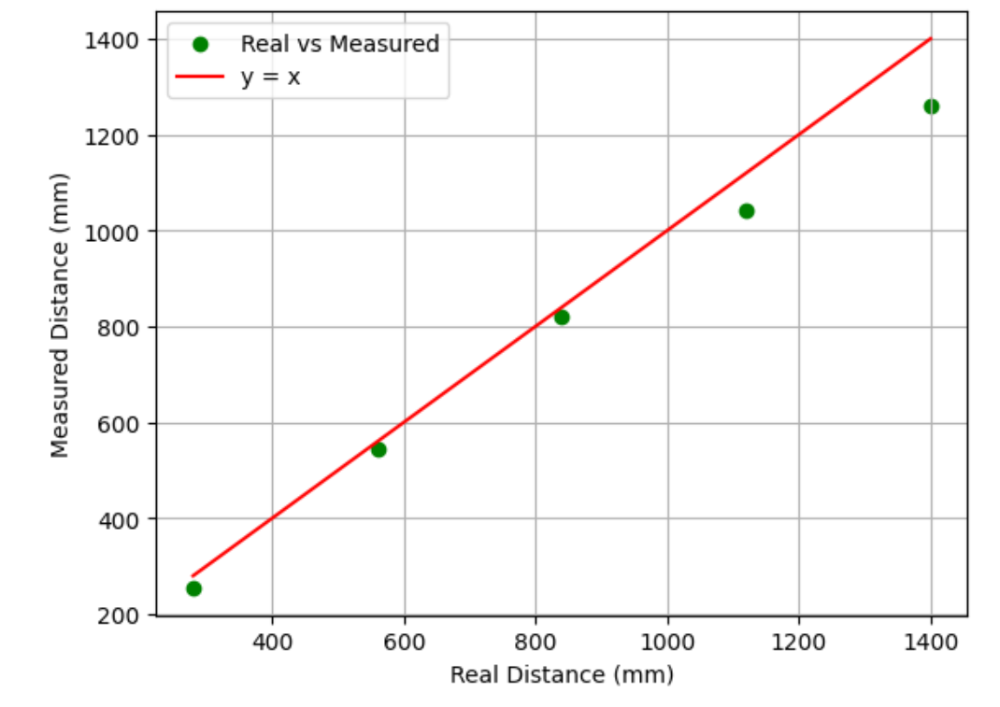
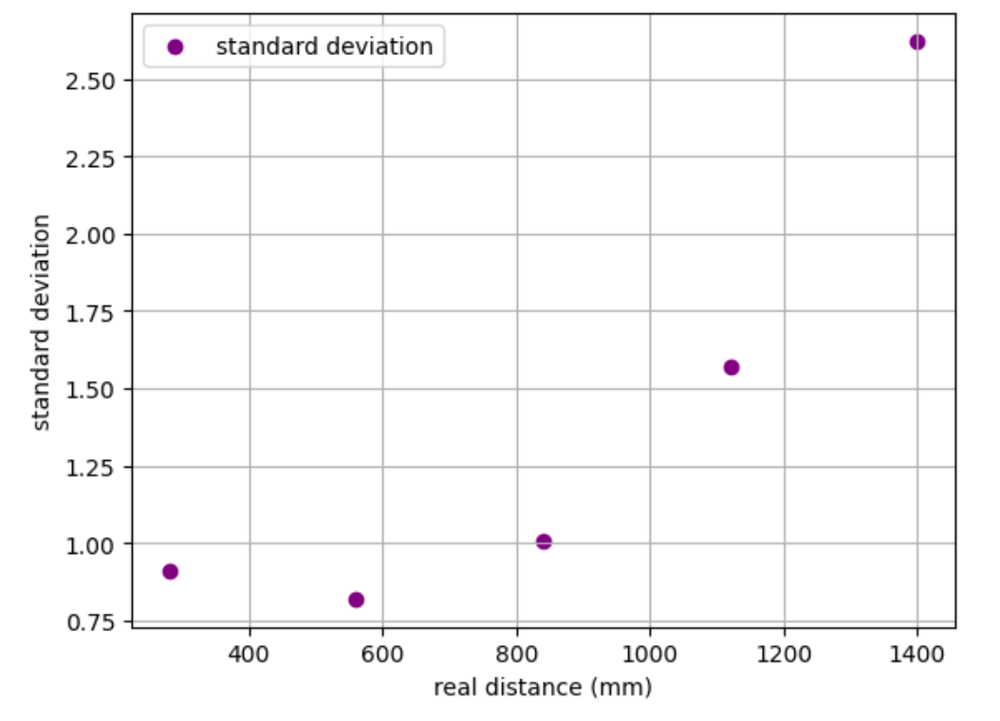
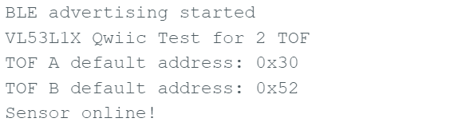
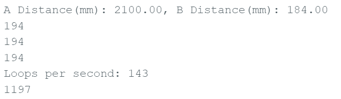

Lab 3: Time of Flight Sensors
Pre Lab
I2C sensor address default is 0x52 based on the datasheet, which
represents 8-bit write address.
Because two TOF share the same default address, we need to change one of
them to differentiate them. The method would be to drive XSHUT LOW in the
code for one TOF while driving the other TOF HIGH and assigning a different I2C
address. If both power off, both of them would get back to the default address.

I plan to place one TOF in the front and one on the right side. The front view can give the car direct feedback of distance and speed in most scenarios and the right one can provide the car with a side environment such as the distance to the wall while parallel driving to a wall. Therefore, I chose a long line for one TOF to give flexibility for placement of breakout board and considered less possibility of limitation from board to the most right side of the car based on its shape. However, for a stunt car that can sharply stop before crushing to an obstacle in the back, it would be difficult if there is no reference object in the front or the right.
Task 1 TOF & QWIIC BOARD

SCL uses lines of yellow color; SDA uses lines of blue color.
Task 2 Artemis Scanning

Serial monitor has this image showing. It does not make sense as default address is 0x52. When I googled it, it turned out in binary 0x29 is missin one more digit than 0x52. Last bit is Read/Write bit, not part of address. They are referring to same deivce.
Task 3 Short Mode Data

I think short mode would be mainly used in the final robot as 1.3m is a sufficient distance to adjust the direction/speed and avoid obstacles in regards to car mass. If normal tasks are conducted under the ambient light instead of dark, Medium and Long mode would not be adopted as they perform poorly in ambient-light conditions.

(With white box as an obstable, attaching TOF to a box ensures its vertical postion.)
Accuracy

Repeatability

I had the notification handler to parse the distance data and time and added average and standard deviation calculation for 20 sample points at five different distance location, with the larest over the detectable maximum distance. Accuracy looks good when distance is within the maximum distance. However, when it gets closer to the maximum boundary in ambient light, the difference gets larger and standard deviaton of sample size of 20 increases evidently. There are space for operation error which may explain the largest distance measured with quite deviation.
Task 4 Two TOF Working
SFEVL53L1X distanceSensorA;
SFEVL53L1X distanceSensorB(Wire, XSHUT); // enable TOF B to be turned on/ off by XSHUT
...
pinMode(XSHUT, OUTPUT);// set XSHUT to be ouput so that it can cpntrol TOF shutdown
digitalWrite(XSHUT, LOW); // Turn off TOF B
distanceSensorA.begin();
distanceSensorA.setI2CAddress(0x30); // address changing for TOF A
Serial.print("TOF A default address: 0x"); // test print
Serial.println(distanceSensorA.getI2CAddress(), HEX);
digitalWrite(XSHUT, HIGH); // enable TOF B through XSHUT
distanceSensorB.begin();

I set TOF A to be the one controllable by XSHUT pin. After setting XSHUT as an output and changing its default address, I can activiate B by disabling A through turning up XSHUT pin.
Task 5 TOF speed
void loop(void)
{ distanceSensorA.startRanging();
...
loop_count++; // count every loop execution
Serial.println(last_time);
if (millis() - last_time >= 1000) {
Serial.print("Loops per second: ");
Serial.println(loop_count);
last_time = millis();
}
if (!distanceSensorA.checkForDataReady() && !distanceSensorB.checkForDataReady()){
return;
}
float d_mm_A = distanceSensorA.getDistance();
distanceSensorA.clearInterrupt();
Serial.print("A Distance(mm): ");
Serial.print(d_mm_A);
....
}
I initiated measurement process by startRanging in the loop; I created an if statement to print the loop count every second. In the last step, remove functions about BLE and serial print to speed up the whole process. As below shows, it achieves 143 loops per second. There are Serial prints taking time; I2C transaction also limits the speed as I called start_ranging every beginning of the loop.

Task 6 TOF & IMU

...
...Reference
I referred to Jeffery Cai and Aiden Derocher websites extensively for
connection ideas, debugging XSHUT control, and clarifying questions.
I used ChatGPT for guiding the reading in Datasheet for this homework, and general
debugging.